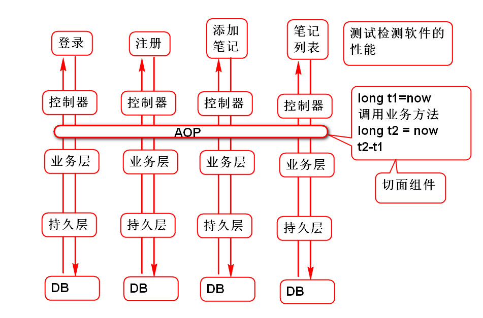
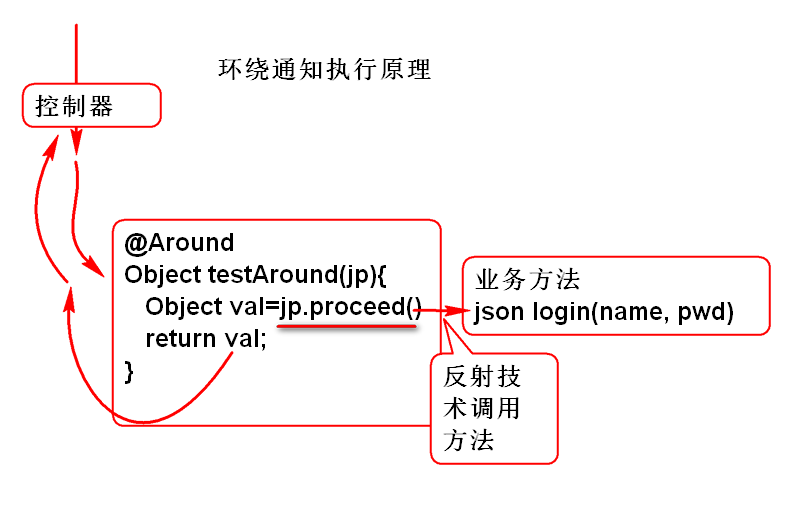
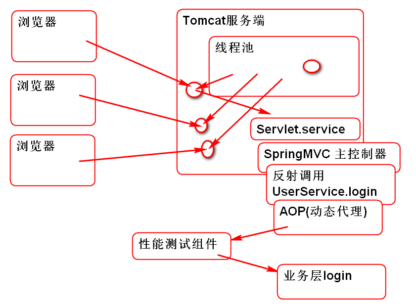

面向切面(儿)编程: 面向业务的横向编程, 可以在不改变原有业务功能情况下为软件扩展横向功能.
切面(儿) 事物的横截面
如果没有AOP, 在实现软件业务层性能测试是这样的:
会出现大量的冗余的重复编码
采用AOP就可以剥离 性能测试逻辑, 在不改变原有业务的情况下动态嵌入测试代码:

Spring AOP 是利用 AspectJ API 实现的所以使用 SpringAOP 之前必须导入 AspectJ API 包:
<dependency>
<groupId>aspectj</groupId>
<artifactId>aspectjweaver</artifactId>
<version>1.5.0</version>
</dependency>
编写第一个AOP程序:
添加Spring AOP配置信息, 开启Spring AOP功能: 添加spring-aop.xml文件:
<?xml version="1.0" encoding="UTF-8"?>
<beans xmlns="http://www.springframework.org/schema/beans"
xmlns:xsi="http://www.w3.org/2001/XMLSchema-instance"
xmlns:context="http://www.springframework.org/schema/context"
xmlns:jdbc="http://www.springframework.org/schema/jdbc"
xmlns:jee="http://www.springframework.org/schema/jee"
xmlns:tx="http://www.springframework.org/schema/tx"
xmlns:aop="http://www.springframework.org/schema/aop"
xmlns:mvc="http://www.springframework.org/schema/mvc"
xmlns:util="http://www.springframework.org/schema/util"
xmlns:jpa="http://www.springframework.org/schema/data/jpa"
xsi:schemaLocation="
http://www.springframework.org/schema/beans http://www.springframework.org/schema/beans/spring-beans-3.2.xsd
http://www.springframework.org/schema/context http://www.springframework.org/schema/context/spring-context-3.2.xsd
http://www.springframework.org/schema/jdbc http://www.springframework.org/schema/jdbc/spring-jdbc-3.2.xsd
http://www.springframework.org/schema/jee http://www.springframework.org/schema/jee/spring-jee-3.2.xsd
http://www.springframework.org/schema/tx http://www.springframework.org/schema/tx/spring-tx-3.2.xsd
http://www.springframework.org/schema/data/jpa http://www.springframework.org/schema/data/jpa/spring-jpa-1.3.xsd
http://www.springframework.org/schema/aop http://www.springframework.org/schema/aop/spring-aop-3.2.xsd
http://www.springframework.org/schema/mvc http://www.springframework.org/schema/mvc/spring-mvc-3.2.xsd
http://www.springframework.org/schema/util http://www.springframework.org/schema/util/spring-util-3.2.xsd">
<!-- 支持 @Aspect 注解 -->
<aop:aspectj-autoproxy/>
</beans>
编写切面组件:
@Aspect //<aop:aspectj-autoproxy/>
@Component //<context:component-scan base-package="cn.tedu" />
public class DemoAspect {
/**
* 在 userService 组件的全部方法之前执行切面方法test
*/
@Before("bean(userService)")
public void test(){
System.out.println("Hello World");
}
}
注意:@Aspect 必须与
<aop:aspectj-autoproxy/>配合 @Component 必须与<context:component-scan base-package="cn.tedu" />配合
启动应用测试: 登录功能是否被动态扩展了功能,输出了 Hello World
用于定义AOP组件的执行位置:
通知执行原理:

通知测试案例:
@Aspect
@Component
public class AdviceDemoAspect {
@Before("bean(userService)")
public void t1(){
System.out.println("Before");
}
@AfterReturning("bean(userService)")
public void t2(){
System.out.println("AfterReturning");
}
@AfterThrowing("bean(userService)")
public void t3(){
System.out.println("AfterThrowing");
}
@After("bean(userService)")
public void t4(){
System.out.println("After");
}
}
测试观察 每个通知的执行位置
环绕通知可以在业务方法的前后扩展功能
是一个万能通知, 可以替代其他几个通知.
其工作原理如下:

环绕通知案例:
@Aspect
@Component
public class AroundAspect {
//环绕通知
//使用环绕通知的方法必须包含如下:
//1. 必须包含方法参数 ProceedingJoinPoint
//2. 必须有返回值 Object
//3. 必须抛出异常 Throwable
@Around("bean(userService)")
public Object testAround(ProceedingJoinPoint jp)
throws Throwable{
System.out.println("Hello Around");
//调用了目标业务方法
Object val = jp.proceed();
//返回业务方法的返回值
return val;
}
}
提示: jp.proceed(); 用于调用目标的业务方法, 如果不调用就意味着跳过目标业务方法的执行, 这就意味着环绕通知可以影响软件功能的执行!
环绕通知可以替代 其他的通知:
@Around("bean(userService)")
public Object testAround(ProceedingJoinPoint jp)
throws Throwable{
try{
//@Before
//在业务方法之前增加了逻辑功能
System.out.println("Hello Around");
//调用了目标业务方法
Object val = jp.proceed();
//返回业务方法的返回值
//@AfterReturning
return val;
}catch(Throwable e){
throw e;
//@AfterThrowing
}finally{
//@After
}
}
用于声明AOP组件对那些类,那些Bean对象的方法进行拦截.
有3种切入点:
建议: 使用一致命名规则, 便于书写切入点表达式, 达到同样的目的切入点表达式可以有多重写法.
面试期间，面试官很喜欢问的问题！
AOP 底层使用了: 动态代理技术
在业务层方法中插入异常代码, 可以用于分析AOP执行原理:

在login方法中插入:
String s = "";
s.charAt(0);
利用异常可以分析 AOP 的底层工作情况:
java.lang.StringIndexOutOfBoundsException: String index out of range: 0
at java.lang.String.charAt(String.java:658)
at cn.tedu.cloudnote.service.UserServiceImpl.login(UserServiceImpl.java:35)
at sun.reflect.NativeMethodAccessorImpl.invoke0(Native Method)
at sun.reflect.NativeMethodAccessorImpl.invoke(NativeMethodAccessorImpl.java:62)
at sun.reflect.DelegatingMethodAccessorImpl.invoke(DelegatingMethodAccessorImpl.java:43)
at java.lang.reflect.Method.invoke(Method.java:497)
at org.springframework.aop.support.AopUtils.invokeJoinpointUsingReflection(AopUtils.java:317)
at org.springframework.aop.framework.ReflectiveMethodInvocation.invokeJoinpoint(ReflectiveMethodInvocation.java:183)
at org.springframework.aop.framework.ReflectiveMethodInvocation.proceed(ReflectiveMethodInvocation.java:150)
at org.springframework.aop.aspectj.MethodInvocationProceedingJoinPoint.proceed(MethodInvocationProceedingJoinPoint.java:80)
at cn.tedu.cloudnote.aop.TimeTestAspect.test(TimeTestAspect.java:22)
at sun.reflect.NativeMethodAccessorImpl.invoke0(Native Method)
at sun.reflect.NativeMethodAccessorImpl.invoke(NativeMethodAccessorImpl.java:62)
at sun.reflect.DelegatingMethodAccessorImpl.invoke(DelegatingMethodAccessorImpl.java:43)
at java.lang.reflect.Method.invoke(Method.java:497)
at org.springframework.aop.aspectj.AbstractAspectJAdvice.invokeAdviceMethodWithGivenArgs(AbstractAspectJAdvice.java:621)
at org.springframework.aop.aspectj.AbstractAspectJAdvice.invokeAdviceMethod(AbstractAspectJAdvice.java:610)
at org.springframework.aop.aspectj.AspectJAroundAdvice.invoke(AspectJAroundAdvice.java:65)
at org.springframework.aop.framework.ReflectiveMethodInvocation.proceed(ReflectiveMethodInvocation.java:172)
at org.springframework.aop.interceptor.ExposeInvocationInterceptor.invoke(ExposeInvocationInterceptor.java:91)
at org.springframework.aop.framework.ReflectiveMethodInvocation.proceed(ReflectiveMethodInvocation.java:172)
at org.springframework.aop.framework.JdkDynamicAopProxy.invoke(JdkDynamicAopProxy.java:204)
at com.sun.proxy.$Proxy45.login(Unknown Source)
at cn.tedu.cloudnote.controller.UserController.login(UserController.java:26)
at sun.reflect.NativeMethodAccessorImpl.invoke0(Native Method)
at sun.reflect.NativeMethodAccessorImpl.invoke(NativeMethodAccessorImpl.java:62)
at sun.reflect.DelegatingMethodAccessorImpl.invoke(DelegatingMethodAccessorImpl.java:43)
at java.lang.reflect.Method.invoke(Method.java:497)
at org.springframework.web.method.support.InvocableHandlerMethod.invoke(InvocableHandlerMethod.java:215)
at org.springframework.web.method.support.InvocableHandlerMethod.invokeForRequest(InvocableHandlerMethod.java:132)
at org.springframework.web.servlet.mvc.method.annotation.ServletInvocableHandlerMethod.invokeAndHandle(ServletInvocableHandlerMethod.java:104)
at org.springframework.web.servlet.mvc.method.annotation.RequestMappingHandlerAdapter.invokeHandleMethod(RequestMappingHandlerAdapter.java:745)
at org.springframework.web.servlet.mvc.method.annotation.RequestMappingHandlerAdapter.handleInternal(RequestMappingHandlerAdapter.java:686)
at org.springframework.web.servlet.mvc.method.AbstractHandlerMethodAdapter.handle(AbstractHandlerMethodAdapter.java:80)
at org.springframework.web.servlet.DispatcherServlet.doDispatch(DispatcherServlet.java:925)
at org.springframework.web.servlet.DispatcherServlet.doService(DispatcherServlet.java:856)
at org.springframework.web.servlet.FrameworkServlet.processRequest(FrameworkServlet.java:953)
at org.springframework.web.servlet.FrameworkServlet.doPost(FrameworkServlet.java:855)
at javax.servlet.http.HttpServlet.service(HttpServlet.java:646)
at org.springframework.web.servlet.FrameworkServlet.service(FrameworkServlet.java:829)
at javax.servlet.http.HttpServlet.service(HttpServlet.java:727)
at org.apache.catalina.core.ApplicationFilterChain.internalDoFilter(ApplicationFilterChain.java:303)
at org.apache.catalina.core.ApplicationFilterChain.doFilter(ApplicationFilterChain.java:208)
at org.apache.tomcat.websocket.server.WsFilter.doFilter(WsFilter.java:52)
at org.apache.catalina.core.ApplicationFilterChain.internalDoFilter(ApplicationFilterChain.java:241)
at org.apache.catalina.core.ApplicationFilterChain.doFilter(ApplicationFilterChain.java:208)
at org.apache.catalina.core.StandardWrapperValve.invoke(StandardWrapperValve.java:220)
at org.apache.catalina.core.StandardContextValve.invoke(StandardContextValve.java:122)
at org.apache.catalina.authenticator.AuthenticatorBase.invoke(AuthenticatorBase.java:501)
at org.apache.catalina.core.StandardHostValve.invoke(StandardHostValve.java:171)
at org.apache.catalina.valves.ErrorReportValve.invoke(ErrorReportValve.java:102)
at org.apache.catalina.valves.AccessLogValve.invoke(AccessLogValve.java:950)
at org.apache.catalina.core.StandardEngineValve.invoke(StandardEngineValve.java:116)
at org.apache.catalina.connector.CoyoteAdapter.service(CoyoteAdapter.java:408)
at org.apache.coyote.http11.AbstractHttp11Processor.process(AbstractHttp11Processor.java:1040)
at org.apache.coyote.AbstractProtocol$AbstractConnectionHandler.process(AbstractProtocol.java:607)
at org.apache.tomcat.util.net.JIoEndpoint$SocketProcessor.run(JIoEndpoint.java:314)
at java.util.concurrent.ThreadPoolExecutor.runWorker(ThreadPoolExecutor.java:1142)
at java.util.concurrent.ThreadPoolExecutor$Worker.run(ThreadPoolExecutor.java:617)
at org.apache.tomcat.util.threads.TaskThread$WrappingRunnable.run(TaskThread.java:61)
at java.lang.Thread.run(Thread.java:745)
Servlet Filter案例, 拦截*.html *.js的请求:

添加过滤器类:
public class HtmlFilter implements Filter {
public void init(FilterConfig cfg)
throws ServletException {
}
public void destroy() {
}
public void doFilter(ServletRequest req,
ServletResponse res, FilterChain chain)
throws IOException, ServletException {
HttpServletRequest request =
(HttpServletRequest) req;
//获取请求的文件名:
String path=request.getRequestURI();
System.out.println(path);
chain.doFilter(req, res);
}
}
配置Filter, web.xml:
<filter>
<filter-name>html</filter-name>
<filter-class>cn.tedu.cloudnote.web.HtmlFilter</filter-class>
</filter>
<filter-mapping>
<filter-name>html</filter-name>
<url-pattern>*.html</url-pattern>
</filter-mapping>
<filter-mapping>
<filter-name>html</filter-name>
<url-pattern>*.js</url-pattern>
</filter-mapping>
测试...